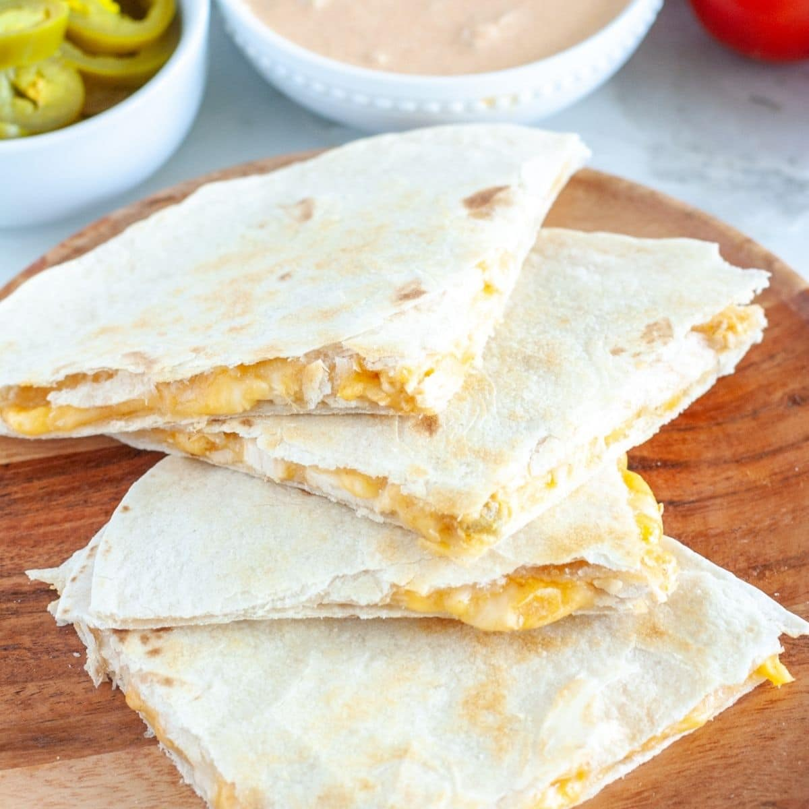

Chicken Quesadilla

Description
An easy go-to for college students everywhere, this chicken quesadilla can serve as dinner or as a "late" night snack. Just make sure you get the Mexican crema!
Ingredients
- Large tortilla
- One skinless, boneless chicken breast
- Chihuahua Cheese
- Mexican crema
- Mexican or Chipotle style seasoning
- Optional Guacamole
- Optional Pico de gallo
Directions
- Thoroughly season chicken with the Mexican or Chipotle style seasoning
- With a pan, cook chicken on medium heat, about 4-5 minutes a side
- Cut cooked chicken into small squares or pieces
- Assemble quesadilla, with open tortilla, spread chihuahua cheese, add chicken, then add the Mexican crema
- Fold tortilla into quesadilla, then put back on pan to crisp the tortilla
- If using guacamole and/or pico de gallo serve with finished quesadilla
- Enjoy!